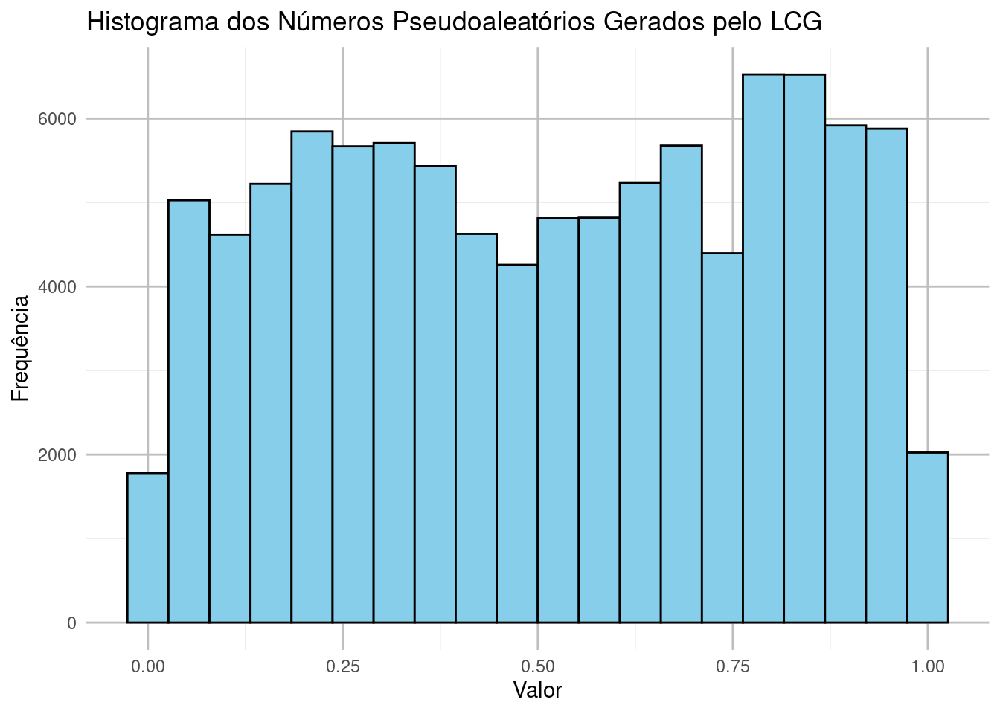
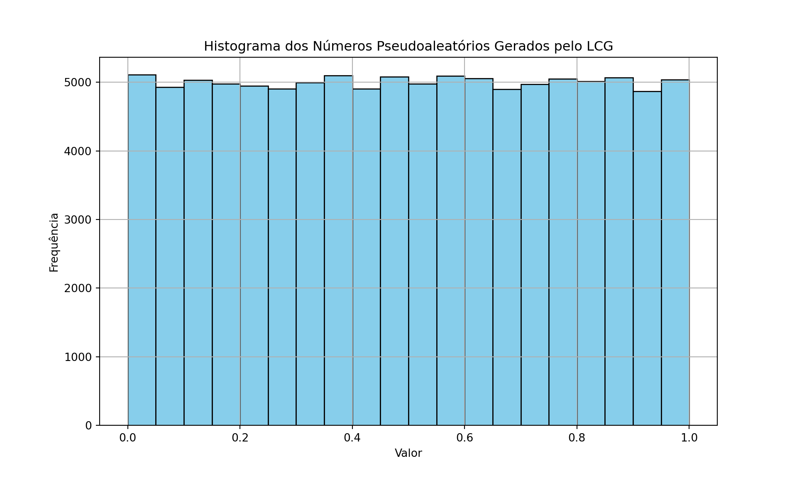
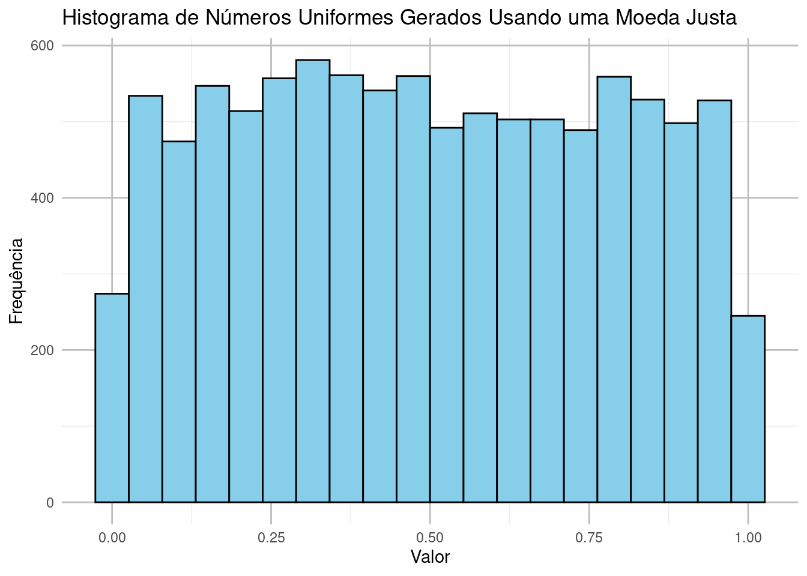
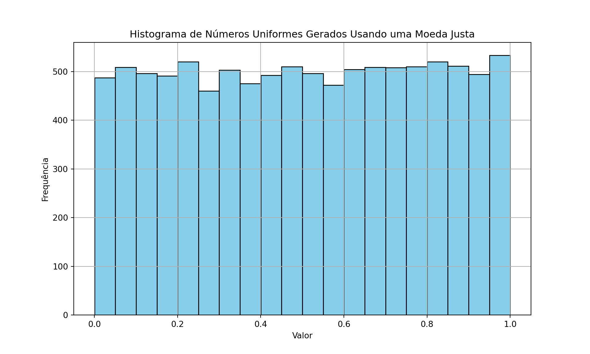

# Exemplo de uso da função módulo em R
# Definindo os valores
a <- 17
b <- 3
# Calculando o módulo de a por b
resto <- a %% b
# Exibindo o resultado
cat("O resultado de", a, "%%", b, "é:", resto, "\n")O resultado de 17 %% 3 é: 2 Números aleatórios têm muitas aplicações na computação, como em simulações, amostragem estatística, criptografia e jogos de azar. No entanto, os computadores, por serem sistemas determinísticos, não podem gerar números realmente aleatórios de forma autônoma. Em vez disso, utilizam algoritmos determinísticos que geram números que parecem aleatórios, e esses números são chamados de pseudoaleatórios.
Um número pseudoaleatório é gerado a partir de uma fórmula matemática que, a partir de uma semente (um valor inicial), gera uma sequência de números que tem as propriedades desejadas de uma sequência aleatória. Essa sequência parece aleatória, mas se a mesma semente for usada, a sequência será a mesma.
O Gerador Linear Congruente (LCG) é um dos métodos mais antigos e simples para gerar números pseudoaleatórios. Ele segue a fórmula:
\[ X_{n+1} = (a \cdot X_n + c) \mod m \]
Onde: - \(X_n\) é o número atual (ou a semente inicial), - \(a\) é o multiplicador, - \(c\) é o incremento, - \(m\) é o módulo, ou seja, o intervalo dos números gerados.
A sequência gerada pelo LCG depende diretamente dos parâmetros \(a\), \(c\), \(m\) e da semente inicial \(X_0\). Um conjunto mal escolhido de parâmetros pode resultar em uma sequência com um período curto, o que compromete a aleatoriedade da sequência.
A função módulo (também conhecida como operação de resto) retorna o resto da divisão de um número por outro. Em termos matemáticos, para dois números inteiros \(a\) e \(b\), a operação módulo é representada como:
\[ r = a \mod b \]
Onde: - \(a\) é o dividendo, - \(b\) é o divisor, - \(r\) é o resto da divisão de \(a\) por \(b\).
Por exemplo, se temos \(a = 17\) e \(b = 5\), a divisão de 17 por 5 dá 3 com um resto de 2, então:
\[ 17 \mod 5 = 2 \]
No contexto do Gerador Linear Congruente (LCG), a função módulo é usada para garantir que os números gerados fiquem dentro de um intervalo específico, geralmente entre 0 e \(m-1\), onde \(m\) é o módulo definido no algoritmo.
# Exemplo de uso da função módulo em R
# Definindo os valores
a <- 17
b <- 3
# Calculando o módulo de a por b
resto <- a %% b
# Exibindo o resultado
cat("O resultado de", a, "%%", b, "é:", resto, "\n")O resultado de 17 %% 3 é: 2 # Exemplo de uso da função módulo em Python
# Definindo os valores
a = 17
b = 3
# Calculando o módulo de a por b
resto = a % b
# Exibindo o resultado
print(f"O resultado de {a} % {b} é: {resto}")O resultado de 17 % 3 é: 2O Gerador Linear Congruente (LCG) é um dos métodos mais simples e eficientes para gerar números pseudoaleatórios. Sua eficácia se baseia em um bom equilíbrio entre a escolha dos parâmetros (multiplicador \(a\), incremento \(c\), módulo \(m\) e semente inicial \(X_0\)) e as propriedades matemáticas que garantem uma sequência suficientemente “aleatória”. Para que o LCG funcione bem, os parâmetros precisam ser cuidadosamente selecionados para garantir que a sequência gerada tenha um período longo, seja bem distribuída e evite padrões repetitivos.
A fórmula básica do LCG é:
\[ X_{n+1} = (a \cdot X_n + c) \mod m \]
Onde: - \(X_n\) é o número gerado na \(n\)-ésima iteração, - \(a\) é o multiplicador, - \(c\) é o incremento, - \(m\) é o módulo, - \(X_0\) é a semente inicial.
O número gerado em cada iteração é o resto da divisão de \((a \cdot X_n + c)\) por \(m\). Essa operação garante que os números fiquem dentro do intervalo \([0, m-1]\). A normalização posterior geralmente transforma esses números em valores no intervalo \([0, 1)\).
O valor de \(m\), conhecido como módulo, define o intervalo no qual os números gerados estarão contidos. Em muitos casos, \(m\) é escolhido como uma potência de 2 (por exemplo, \(m = 2^{32}\) ou \(m = 2^{64}\)) porque cálculos modulares com potências de 2 são mais rápidos em hardware.
A escolha de \(m\) também influencia o período máximo da sequência. Se todos os parâmetros forem escolhidos corretamente, o LCG pode gerar uma sequência com o período máximo, que é \(m\). Isso significa que a sequência não repetirá nenhum número até que \(m\) números tenham sido gerados.
Para garantir que o gerador tenha o período máximo (ou seja, \(m\) números diferentes antes de repetir a sequência), a escolha dos parâmetros \(a\) (multiplicador), \(c\) (incremento) e \(m\) (módulo) deve satisfazer as seguintes condições baseadas em teorias de números:
Um exemplo clássico de um bom conjunto de parâmetros é:
Esses parâmetros foram escolhidos para garantir que o LCG tenha um longo período e uma boa distribuição dos números gerados. O módulo \(m = 2^{32}\) é uma potência de 2, o que torna as operações modulares mais rápidas, e os valores de \(a\) e \(c\) satisfazem as condições matemáticas para maximizar o período.
# Importando o pacote necessário
library(gmp)
Attaching package: 'gmp'The following objects are masked from 'package:base':
%*%, apply, crossprod, matrix, tcrossprod# Parâmetros do exemplo
m <- 2^32
a <- 1664525
c <- 1013904223
# Verificando as condições
# 1. O incremento c deve ser coprimo com m
coprimo_c_m <- gcd(c, m) == 1
# 2. a - 1 deve ser divisível por todos os fatores primos de m
a_menos_1 <- a - 1
print(a_menos_1)[1] 1664524# Verificando se a - 1 é divisível por 2 (único fator primo de m = 2^32)
divisivel_por_2 <- (a_menos_1 %% 2 == 0)
# 3. Se m for divisível por 4, a - 1 também deve ser divisível por 4
divisivel_por_4 <- (a_menos_1 %% 4 == 0)
list(coprimo_c_m, divisivel_por_2, divisivel_por_4)[[1]]
[1] TRUE
[[2]]
[1] TRUE
[[3]]
[1] TRUEimport math
# Parâmetros do exemplo
m = 2**32
a = 1664525
c = 1013904223
# Verificando as condições
# 1. O incremento c deve ser coprimo com m
coprimo_c_m = math.gcd(c, m) == 1
# 2. a - 1 deve ser divisível por todos os fatores primos de m
a_menos_1 = a - 1
print(a_menos_1)1664524# Verificando se a - 1 é divisível por 2 (único fator primo de m = 2^32)
divisivel_por_2 = (a_menos_1 % 2 == 0)
# 3. Se m for divisível por 4, a - 1 também deve ser divisível por 4
divisivel_por_4 = (a_menos_1 % 4 == 0)
coprimo_c_m, divisivel_por_2, divisivel_por_4(True, True, True)O LCG funciona porque: - As operações modulares garantem que os números gerados estejam dentro de um intervalo fixo e possam cobrir todo o espaço de possíveis valores de maneira ordenada. - A escolha adequada dos parâmetros garante que a sequência tenha um longo período (o maior possível dado \(m\)), evita padrões repetitivos e assegura que a sequência seja pseudoaleatória o suficiente para muitas aplicações, como simulações e métodos de Monte Carlo.
No entanto, o LCG pode não ser adequado para todas as aplicações, especialmente em criptografia, onde a previsibilidade é um problema. Para a maioria dos usos científicos e de simulação, ele ainda é uma escolha eficiente e simples.
Os parâmetros no Gerador Linear Congruente (LCG) têm um impacto significativo sobre a qualidade e as propriedades da sequência de números pseudoaleatórios gerados. Os parâmetros principais são:
Por essas razões, a escolha dos parâmetros \(a\), \(c\), \(m\) e da semente \(X_0\) é crítica para garantir que o LCG produza números pseudoaleatórios de alta qualidade e com um período longo.
# Carregando o pacote ggplot2
library(ggplot2)
# Classe para o Gerador Congruente Linear
LinearCongruentialGenerator <- setRefClass(
"LinearCongruentialGenerator",
fields = list(a = "numeric", c = "numeric", m = "numeric", semente = "numeric"),
methods = list(
initialize = function(semente, a = 1103515245, c = 12345, m = 2^32) {
.self$a <- a
.self$c <- c
.self$m <- m
.self$semente <- semente
},
gerar = function() {
# Atualizando a semente
.self$semente <- (.self$a * .self$semente + .self$c) %% .self$m
return(.self$semente / .self$m) # Normalizando para [0, 1)
}
)
)
# Inicializando o gerador com uma semente
lcg <- LinearCongruentialGenerator$new(semente = 5)
# Gerando 1000 números pseudoaleatórios
numeros_gerados <- sapply(1:100000, function(x) lcg$gerar())
# Convertendo para um data.frame
dados <- data.frame(numeros_gerados = numeros_gerados)
# Plotando o histograma dos números gerados
ggplot(dados, aes(x = numeros_gerados)) +
geom_histogram(bins = 20, fill = 'skyblue', color = 'black') +
ggtitle('Histograma dos Números Pseudoaleatórios Gerados pelo LCG') +
xlab('Valor') +
ylab('Frequência') +
theme_minimal() +
theme(panel.grid.major = element_line(color = "grey"))
import matplotlib.pyplot as plt
class LinearCongruentialGenerator:
def __init__(self, semente, a=1103515245, c=12345, m=2**32):
self.a = a
self.c = c
self.m = m
self.semente = semente
def gerar(self):
# Atualizando a semente
self.semente = (self.a * self.semente + self.c) % self.m
return self.semente / self.m # Normalizando para [0, 1)
# Inicializando o gerador com uma semente
lcg = LinearCongruentialGenerator(semente=5)
# Gerando 1000 números pseudoaleatórios
numeros_gerados = [lcg.gerar() for _ in range(100000)]
# Plotando o histograma dos números gerados
plt.figure(figsize=(10, 6))
plt.hist(numeros_gerados, bins=20, color='skyblue', edgecolor='black')
plt.title('Histograma dos Números Pseudoaleatórios Gerados pelo LCG')
plt.xlabel('Valor')
plt.ylabel('Frequência')
plt.grid(True)
plt.show()
# Carregando pacotes necessários
library(ggplot2)
# Função para simular o lançamento de uma moeda justa
lancar_moeda <- function() {
# Lançar moeda justa: 0 para coroa (K) e 1 para cara (C)
sample(c(0, 1), 1)
}
# Função para gerar um número uniformemente distribuído usando uma moeda
gerar_numero_uniforme <- function(n_bits = 32) {
numero <- 0
for (i in 1:n_bits) {
bit <- lancar_moeda()
# Atualizando o número, multiplicando pela base 2
numero <- numero + bit * (2^-(i))
}
return(numero)
}
# Gerando 10000 números uniformemente distribuídos
numeros_uniformes <- sapply(1:10000, function(x) gerar_numero_uniforme())
# Convertendo para um data.frame
dados <- data.frame(numeros_uniformes = numeros_uniformes)
# Plotando o histograma dos números gerados
ggplot(dados, aes(x = numeros_uniformes)) +
geom_histogram(bins = 20, fill = 'skyblue', color = 'black') +
ggtitle('Histograma de Números Uniformes Gerados Usando uma Moeda Justa') +
xlab('Valor') +
ylab('Frequência') +
theme_minimal() +
theme(panel.grid.major = element_line(color = "grey"))
import random
import matplotlib.pyplot as plt
# Função para simular o lançamento de uma moeda justa
def lancar_moeda():
# Lançar moeda justa: 0 para coroa (K) e 1 para cara (C)
return random.choice([0, 1])
# Função para gerar um número uniformemente distribuído usando uma moeda
def gerar_numero_uniforme(n_bits=32):
numero = 0
for i in range(n_bits):
bit = lancar_moeda()
# Atualizando o número, multiplicando pela base 2
numero += bit * (2 ** -(i + 1)) # Cada bit tem um peso de 2^-(posição)
return numero
# Gerando 1000 números uniformemente distribuídos
numeros_uniformes = [gerar_numero_uniforme() for _ in range(10000)]
# Plotando o histograma dos números gerados
plt.figure(figsize=(10, 6))
plt.hist(numeros_uniformes, bins=20, color='skyblue', edgecolor='black')
plt.title('Histograma de Números Uniformes Gerados Usando uma Moeda Justa')
plt.xlabel('Valor')
plt.ylabel('Frequência')
plt.grid(True)
plt.show()